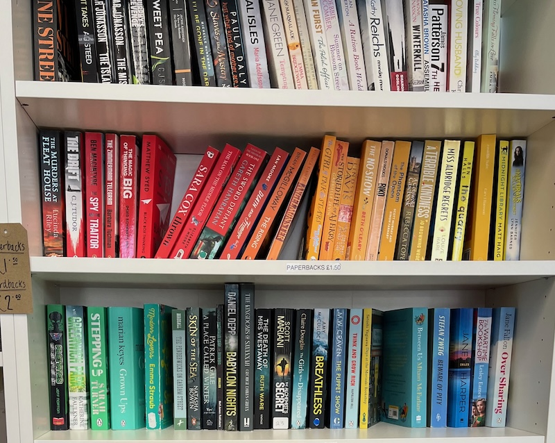

This blog post was written after an existential ReRead crisis but I wanted to record where my mind was at pre-19th August. It’s written in the present tense as if it were still the plan. Also as a side note, I’m thinking about posting blog posts more frequently - to do this I’m going to proofread less - so things may not make sense or flow as well. Open to thoughts and feedback (through any of ReRead’s social media).
Get to at least 100 books requested through the ReRead website from at least 15 different customers, at least 4 of which are total strangers that I have had no contact with. Each customer requesting between 6 and 7 books on average. Achieve this by 15th September 2024.
The 4 strangers would be for validating that it’s not just close friends and family being “nice” and requesting books through ReRead. These 4 strangers are to be acquired through the poster and the short form video posted on ReRead’s social media.
What I hope to achieve? This is to assess the hypotheses that:By taking requests I do not need to build any complicated back ends. I can go around charity shops talking photos of the shelves - this way, if I get new requests, I can check photos to see if I’ve seen the book before. While I am in the shop, I check the shelves against an alphabetically ordered list of ReRead’s first 100 requested books (most charity shops order their books alphabetically by authors last name, however some seem to be grouped by colour for aesthetics - this is mostly done in shops with only a few books but it does make finding the books much harder.)
Once I find a reserved book, I walk out of the charity shop, leaving the book on the shelf (sounds counter intuitive).
I have spoken to some amazing Oxfam bookshop owners, they are happy to take phone calls and search their shops for books. I would do this and ask them to reserve the book (the one I just found myself in their shop) and let them know that a ReRead customer will be around to collect it soon. I then email the ReRead customer saying I have found their request, checking they are still happy to pay the £1 fee. If they are, then I take the £1 request fee payment and tell them where the book is reserved so they can collect it and pay the charity for it.
This approach therefore relies heavily on marketing to build an initial customer base and 100 book requests. It provides valuable learnings, testing assumptions about customers and their behaviours. The MVP is me, there is no back end. I do the searching and there is little/no fancy scanning technology or database. The idea is to learn as much as possible by doing as little as possible, as suggested by the book “The Lean Start-up”.
Back to present day me, I recently created a financial model and scoped out the request mechanisms. I’ve had some serious thoughts about how scalable this request feature is as a revenue source for ReRead. I am now thinking about working on something more technically involved over the next few months to create a more enticing MVP (minimum viable product). Although I have not tested the hypotheses I have laid out above, I have just gone over it again and again in my head. This is potentially not ideal and I may be “pivoting” without giving this a proper go. The new MVP I am thinking about switching to would aim to delete the need to test many of the hypotheses mentioned above as different (and hopefully fewer and smaller!) assumptions will be made. Maybe it’s a bit like the saying “no part is the best part” but somehow translated to assumptions - “smaller and fewer assumptions are the best assumptions” (??) - so catchy. To be continued..